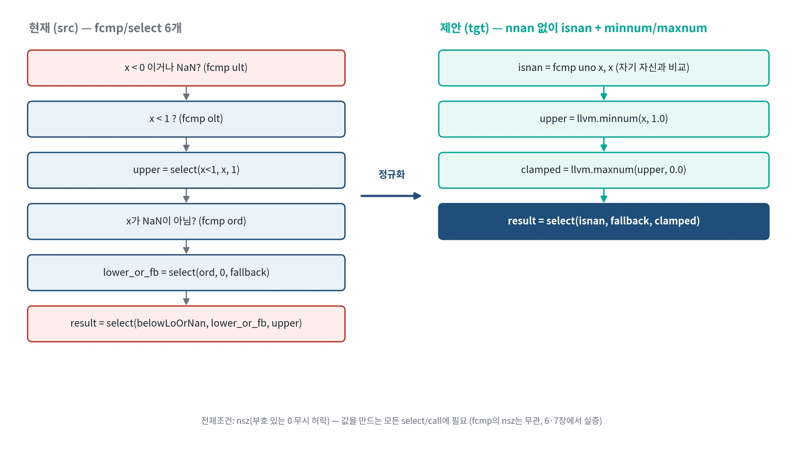
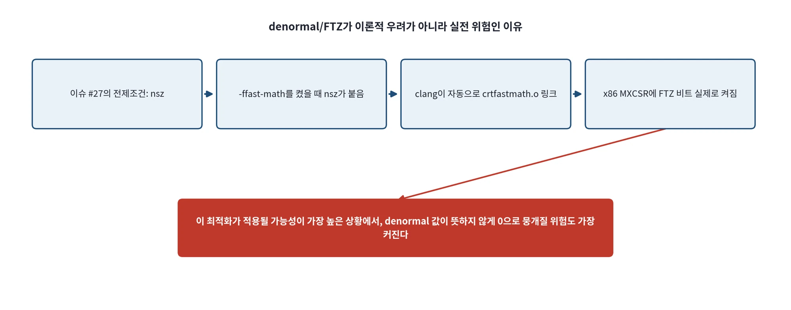
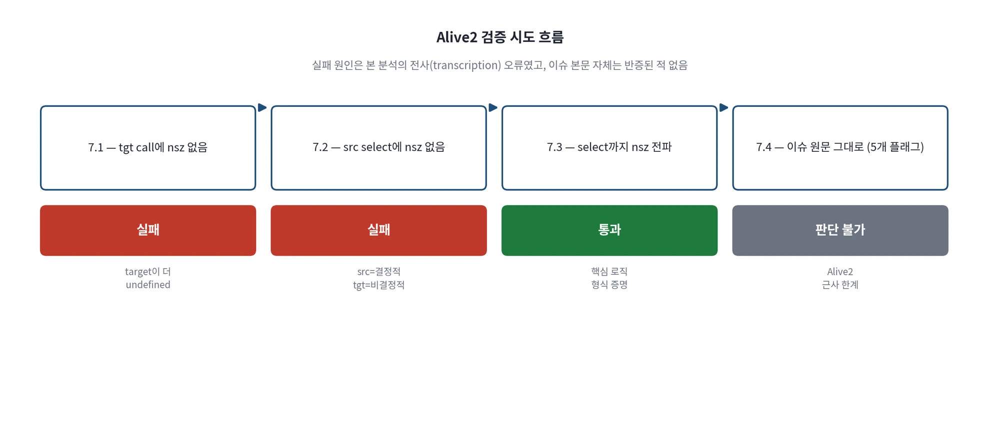
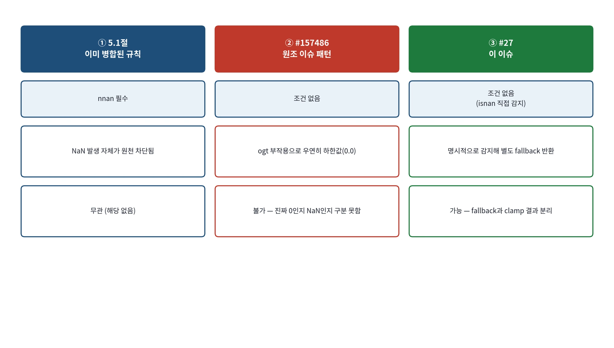
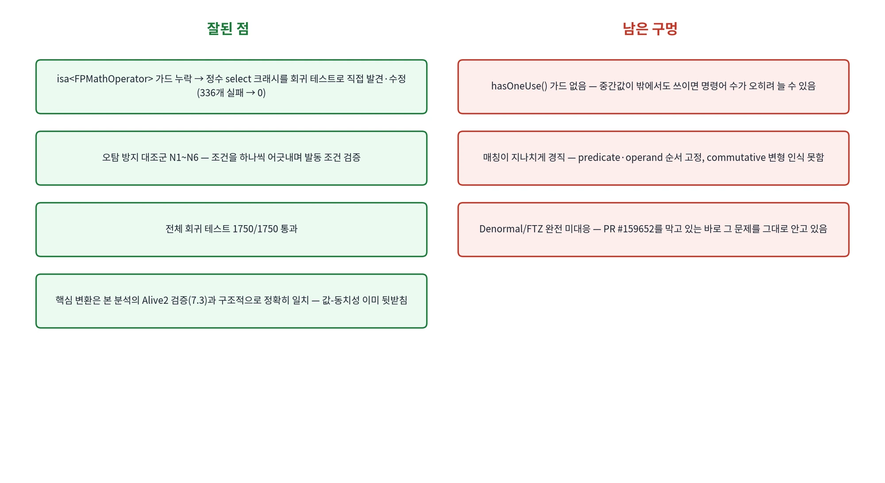

NaN 대체값을 보존하며 clamp를 정규화하기
여러 비교와 select로 표현한 clamp를 minnum·maxnum과 명시적인 NaN 선택으로 나눈다.
llvm_issue_27_analysis_edited.docx의 전체 내용입니다. 설명·코드·표·검증 기록을 생략하지 않고 옮겼습니다.
- MD로컬 패치 보고서CLAMP_PATCH_REPORT.md
- PDF제안·검증 발표자료 · 16쪽llvm_issue_213189_ppt.pdf
- DOCX상세 분석 보고서llvm_issue_27_analysis.docx
- DOCX그림을 추가한 수정 보고서llvm_issue_27_analysis_edited.docx
- PDF실전 사례·후속 구현 발표자료 · 18쪽llvm_issue_27_presentation.pdf
각 자료는 별도의 버전입니다. 같은 주제라도 구현 상태·설명 범위·수치가 다를 수 있습니다.
이 문서의 목차
LLVM Open Issue 분석 보고서
Issue #27 — nsz NaN-fallback [0,1] float clamp을 minnum/maxnum으로 canonicalize
작성자: 김준영
1. 개요
이 문서는 llvm/llvm-project의 open issue #27을 분석한 내용을 정리한 것이다. 지금까지 분석한 #175552, #92542는 이미 병합된 PR을 사후적으로 역추적하는 작업이었던 반면, 이 이슈는 병합된 패치가 없는 미해결 제안(open, no patch)이다. 즉 '이미 있는 답을 설명'하는 것이 아니라, '아직 없는 답에 대한 판단 근거를 스스로 마련'해야 하는 문제라는 점에서 지금까지와 성격이 다르다.
본 문서는 이해 단계(패턴 분석·선례 조사)에서 시작해, 실측 실험(fcmp 플래그 무관성), Alive2를 통한 형식 검증(성공·실패 사례 모두 포함), poison/undef 1차 문헌 조사, 원조 이슈와의 근본적 차이 분석, 그리고 실제 로컬 InstCombine 패치 구현 리뷰까지 이어진 전체 과정을 하나의 흐름으로 재구성한 최신판이다. 이전 버전에서 있었던 오류(PR #159652를 '병합됨'으로 잘못 서술한 것 등)의 정정 이력도 그대로 남겨 분석 과정 자체를 투명하게 기록했다.
전체 흐름: (1) 제안된 최적화 패턴 정의 → (2) 성립 근거(nsz 시맨틱) → (3) 이슈 저자가 제시한 정량적 증거 → (4) 선례 조사 → (5) fcmp 플래그 실측 실험 → (6) Alive2 형식 검증 → (7) poison/undef 조사 → (8) 원조 이슈와의 근본적 차이 → (9) 로컬 패치 구현 리뷰 → (10) 최종 결론.
2. 대상 패턴 정의
현재 default<O3>는 비-NaN 입력을 [0,1] 범위로 clamp하고, NaN 입력에는 별도의 fallback 값을 반환하는 코드를, 정확하지만 장황한 fcmp/select 트리 형태로 그대로 남겨둔다. 이슈는 nsz(no-signed-zeros) 플래그가 있는 좁은 조건 하에서, 이를 명시적 NaN 분기 하나와 llvm.minnum/llvm.maxnum 호출로 정규화하자고 제안한다.
2.1 현재 형태 (src)
define float @current_scalar(float %x, float %fallback) {
%below_lo_or_nan = fcmp nsz ult float %x, 0.0 ; x<0 이거나 NaN (unordered)
%below_hi = fcmp nsz olt float %x, 1.0 ; x<1 (ordered)
%upper = select %below_hi, float %x, float 1.0
%ordered = fcmp ord float %x, 0.0 ; NaN이 아닌가?
%lower_or_fallback = select %ordered, float 0.0, float %fallback
%result = select %below_lo_or_nan, %lower_or_fallback, %upper
ret float %result
}2.2 제안 형태 (tgt)
define float @proposed_scalar(float %x, float %fallback) {
%isnan = fcmp uno float %x, %x
%upper = call float @llvm.minnum.f32(float %x, float 1.0)
%clamped = call float @llvm.maxnum.f32(float %upper, float 0.0)
%result = select %isnan, float %fallback, float %clamped
ret float %result
}fcmp 6개 + select 6개(scalar+v8 합산 기준, 이슈 본문 수치) 수준이던 트리가, fcmp 2개 + select 2개 + min/max 호출 4개로 줄어든다.

그림 1. clamp+NaN-fallback 패턴의 정규화 구조 — src(왼쪽) → tgt(오른쪽)
3. 왜 이게 성립하는가 — nsz 시맨틱
minnum/maxnum은 IEEE 754 표준상 두 operand가 부호만 다른 0(+0.0/-0.0)일 때 어느 쪽을 반환할지가 구현별로 갈리는 미묘한 지점이 있다. nsz(no-signed-zeros) fast-math 플래그는 '부호 있는 0의 차이는 결과에 영향을 주지 않는다고 간주해도 좋다'는 것을 컴파일러에 미리 허락하는 플래그다. 이 여유 덕분에, 정확하지만 장황한 비교/분기 트리를 minnum/maxnum 호출로 뭉뚱그려도 안전하다는 것이 이슈의 핵심 논증이다.
스펙 근거: LLVM LangRef의 Fast-Math Flags 절(https://llvm.org/docs/LangRef.html#fast-math-flags)은 nsz를 '부호 있는 0 결과의 차이를 무시할 수 있다(sign of a zero result may be ignored)'고 정의한다. 이는 비교 연산(fcmp)이 아니라 값을 생성하는 연산(select, 산술 연산, 여기서는 minnum/maxnum)에 적용될 때만 실질적 의미를 가지며, 이 구분이 6·7장에서 실증한 'fcmp의 nsz는 무관하다'는 결론의 스펙상 근거다.
이는 이전에 분석한 #175552(x86 MAX/MIN intrinsic을 llvm.maxnum/minnum으로 canonicalize하며 NegZero 조건을 다루던 것)와 같은 계열의 논증 구조다. 두 이슈 모두 '표준 min/max intrinsic으로 정규화하면 이후 최적화 패스가 더 잘 인식한다'는 동일한 동기를 공유한다.
4. 이슈 작성자가 제시한 증거
정확성(무작위 테스트): (x, fallback) 50만 144쌍을 검사해 실패 0건, nsz 범위 내에서 허용되는 부호 있는 0 차이 12건만 확인
형식 검증(Alive2) 시도: fast-math 플래그를 Alive2가 근사 처리하는 한계로 scalar 케이스는 결론 없음, v8 벡터 케이스는 타임아웃 — 증명이 아니라는 점을 스스로 명시
백엔드 비용 증거: x86-64-v4, AArch64 Neoverse V1, RISC-V(RVV128) 세 타깃에서 llvm-mca로 명령어 수·사이클·uOp 비교 — 명령어 수는 모든 타깃에서 감소하지만, 총 사이클은 x86-64에서 오히려 증가
실전 코퍼스 증거: 38,659개 최적화된 .ll 파일을 스캔해 darktable(오픈소스 이미지 처리 프로그램)의 dither 처리 코드에서 이 패턴 8건을 확인, 전부 true_positive로 검토됨
증거 수준이 일반적인 good-first-issue보다 훨씬 높지만, 형식적 증명(Alive2)은 확보하지 못했고 성능 이득도 타깃에 따라 갈린다는 점을 이슈 스스로 인정하고 있다.
5. 선례 조사 결과
5.1 이미 존재하는 절반짜리 canonicalization
llvm/llvm-project 본가의 InstCombineSelect.cpp에 이미 이 계열의 코드가 있다. 최초 조사 때는 오래된 미러(llvm-mirror)에서 옛 버전을 인용했으나, main 브랜치에서 직접 받아 대조한 결과 실제 코드는 훨씬 더 정교하게 진화해 있었다 — 아래는 raw.githubusercontent.com에서 직접 확인한 현재 버전이다.
// Note: nnan은 select가 아니라 fcmp에서 전파됨. 많은 타깃이
// NaN 부재를 증명 못하면 minnum/maxnum을 libcall로 내려야 하므로,
// nnan 없는 변환은 사실상 손해다.
if (FCmp && FCmp->hasNoNaNs() &&
(SIFPOp->hasNoSignedZeros() ||
(SIFPOp->hasOneUse() &&
canIgnoreSignBitOfZero(*SIFPOp->use_begin())))) {
if (match(&SI, m_OrdOrUnordFMax(m_Value(X), m_Value(Y)))) {
Value *BinIntr = Builder.CreateBinaryIntrinsic(
Intrinsic::maxnum, X, Y, &SI);
// 결과 min/max에는 nnan·nsz를 항상 강제로 설정
// (타깃이 필요하면 fcmp+select로 다시 내릴 수 있도록)
...
}
}nnan 조건이 select가 아니라 fcmp 쪽에 걸려 있다 — 이전에 인용한 버전은 select의 nnan을 확인했으나, 실제로는 비교 연산 자체의 nnan을 확인한다
nsz 조건이 더 느슨하다 — select 자체에 nsz가 없어도, 그 결과를 쓰는 곳이 부호 있는 0 차이를 신경 쓰지 않는다는 게 증명되면(canIgnoreSignBitOfZero) 통과된다
m_OrdOrUnordFMax / m_OrdOrUnordFMin — ordered뿐 아니라 unordered(ult 계열) 비교까지 매칭 범위에 포함된다. 이슈 #27의 하한 비교가 ult(unordered)라는 점을 고려하면, 기존 규칙과 겹치는 부분이 최초 조사 때 판단한 것보다 클 가능성이 있다
다만 nnan을 여전히 필수로 요구한다는 점은 변하지 않았다 — 'NaN이 없다고 증명되지 않으면' 발동하지 않는다. 이슈 #27은 이 nnan 요구를 없애고, 대신 %isnan으로 명시적으로 감지해 별도 처리하자는 확장이라는 본 분석의 핵심 논지는 그대로 유효하다. 다만 인용 코드 자체가 최신이 아니었다는 점은 정정이 필요했다.
5.1.1 부록 — 인접 코드에서 발견한 denormal 가드의 실제 선례
같은 파일의 인접한 코드 블록(fdiv 1/x, llvm.canonicalize 관련 별도 패턴)에서, denormal mode를 확인하는 실제 관용구를 확인했다.
DenormalMode Mode = F.getDenormalMode(FPSem);
if (Mode == DenormalMode::getIEEE()) {
// ... 안전하게 fold 진행
}이는 10.4절에서 제안한 denormal 가드(Function::getDenormalMode() 활용)가 임의로 지어낸 방식이 아니라, 같은 파일 안에 이미 존재하는 실제 관용구와 일치한다는 것을 확인해 준다. 다만 select→minnum/maxnum 변환 코드 자체는 이 가드를 쓰지 않는다 — 5.5.3절의 결론(기존 규칙도 denormal-fp-math를 체크하지 않는다)은 이 최신 코드로 재확인해도 그대로 유효하다.
5.2 주의 신호 — fcmp의 nsz는 공식적으로 무의미
출처: LLVM 공식 InstCombine Contributor Guide (https://llvm.org/docs/InstCombineContributorGuide.html) 에 다음 문장이 명시되어 있다.
Do not rely on fcmp's nsz flag to perform optimizations.
It is meaningless for fcmp so it should not affect the optimization.이슈 본문의 PoC 코드는 fcmp 명령어 자체에도 nsz를 붙이고 있다(fcmp nsz ult float %x, 0.0). 공식 가이드에 따르면 fcmp의 nsz는 무의미하게 취급되어야 하므로, 이 논증이 실제로 select/minnum/maxnum 쪽의 nsz에만 의존하는지, 아니면 fcmp의 nsz에도 암묵적으로 기대고 있는 부분이 있는지 재검토가 필요하다. 이는 질문 2(poison/undef 등 추가 가드 필요 여부)에 대한 구체적인 점검 포인트다.
5.3 target-independent 원칙
같은 가이드는 InstCombine이 target-independent canonicalization pass임을 명시한다: 'chosen canonical form needs to be the same for all targets, and not depend on target-specific cost modelling.' 2017년의 유사 선례(정수 min/max canonicalization 도입, D33186)에서도 '일부 백엔드가 NaN 인지 못하는 단순 FMIN/FMAX만 지원해 표준 형태 선택이 안 되는 문제를, 백엔드 로직을 복잡하게 만들지 않고 IR(InstCombiner) 레벨에서 해결'한 전례가 있다. 이는 질문 3(x86에서 사이클이 늘어나는 트레이드오프를 어떻게 다룰지)에 대한 답의 실마리가 된다 — LLVM 철학상 IR 표준형은 유지하고, 타깃별 손해는 백엔드(codegen) 단계에서 흡수하는 것이 일반적인 해법이다.
5.4 원조 이슈와의 관계 — #157486 / PR #159652
llvm/llvm-project 본가에 이 문제의 '부분집합'에 해당하는 이슈가 이미 존재한다. NaN 처리가 없는 순수 double-clamp 패턴이다.
; Issue #157486 (아직 open)
%v0 = fcmp nsz ogt float %arg0, 0.0
%v1 = select nsz i1 %v0, float %arg0, float 0.0
%v2 = fcmp nsz ogt float %v1, C
%v3 = select nsz i1 %v2, float C, float %v1
; => maxnum(arg0, 0.0) -> minnum(., C)이 이슈는 실제 상용 코드(ffmpeg amrnbdec.ll)에서 발견된 패턴이며, PR #159652가 이를 해결하기 위해 제출되었다. 다만 재검토 결과, 이 PR은 병합된 것이 아니라 아직 리뷰가 진행 중인 open 상태이며, 저장소 검색만으로 병합 여부를 단정한 것은 본 분석 초기 버전의 오류였다. 아래 6장의 실측 실험으로 이 점을 다시 확인했다.
정정 이전 버전의 이 문서는 PR #159652가 병합되었다고 서술했으나, 이는 검색 스니펫만으로 판단한 오류였다. 실제로는 아직 리뷰 중인 open PR이며, 이는 6장의 로컬 재현 실험으로 실증적으로도 확인되었다. |
5.5 PR #159652 리뷰에서 드러난 새로운 정확성 우려 — Denormal/FTZ
PR #159652의 리뷰 코멘트에서, 저자 VedantParanjape 스스로 다음과 같은 미해결 우려를 제기했다.
"This is a canonicalize introducing transformation.
If %arg0 is a denormal, and the transformed result
will be flushed but it wouldn't in the original."즉 FTZ(flush-to-zero, denormal 값을 0으로 처리하는 하드웨어/컴파일러 설정)가 활성화된 환경에서는, 원래의 fcmp/select 형태와 minnum/maxnum으로 변환된 형태가 denormal 입력에 대해 서로 다르게 동작할 수 있다는 것이다.
5.5.1 dtcxzyw의 제안 — 막연한 우려가 아니라 구체적인 API
리뷰어 dtcxzyw는 막연히 '조심하자'가 아니라, 구체적인 해결책을 제시했다: 함수의 denormal mode가 ieee인지 확인하자는 것이다. 이는 LLVM에 이미 존재하는 denormal-fp-math 함수 어트리뷰트를 가리킨다 — 이는 하드웨어 런타임 상태가 아니라 IR 안에 명시적으로 저장되는 정보이며, Function::getDenormalMode(Type) 같은 API로 InstCombine 안에서 직접 조회할 수 있다.
denormal-fp-math 값 | 의미 |
ieee | denormal을 정확하게 그대로 계산 (fold 적용 안전) |
preserve-sign | denormal을 0으로 flush, 부호는 유지 (x86 FTZ가 이 모드) |
positive-zero | denormal을 +0으로 flush |
즉 이 우려는 '코드생성 단계에서나 신경 쓸 먼 이야기'가 아니라, InstCombine 패스 안에서 Outer.getFunction()->getDenormalMode(...) 한 줄로 즉시 확인 가능한, IR 레벨에서 바로 실행 가능한 가드다.
5.5.2 이 우려가 이론적 엣지케이스가 아닌 이유 — crtfastmath.o
LLVM 개발자 메일링 리스트('Handling of FP denormal values')에서 다음 사실을 확인했다: -ffast-math 또는 -Ofast로 컴파일하면, clang은 가능한 경우 crtfastmath.o를 자동으로 링크한다. 이 오브젝트 파일은 프로그램 시작 시 x86의 MXCSR 레지스터에서 DAZ/FTZ 비트를 실제로 켜는 정적 생성자를 포함한다.

그림 4. nsz 전제조건이 실제 FTZ 하드웨어 모드로 이어지는 인과 사슬
연결고리 이슈 #27의 전제조건은 nsz다. nsz는 -ffast-math를 켰을 때 clang이 자동으로 붙이는 플래그다. 그런데 -ffast-math는 동시에 crtfastmath.o를 링크해 x86 CPU를 실제로 FTZ 모드로 전환한다. 즉 denormal/FTZ 문제는 희박한 가정이 아니라, 이 최적화가 적용되는 바로 그 컴파일 상황에서 실제로 발생할 가능성이 있는 현실적 위험이다. |
5.5.3 기존 병합 규칙도 같은 결함을 보고된 적 없이 안고 있음
5.1절의 이미 병합된 규칙(nnan+nsz 요구)이 denormal-fp-math를 체크하지 않는다는 것은 이전 절(현재는 6장 실측)에서 실증했다. GitHub 이슈 검색으로 이 결함이 별도로 보고된 적이 있는지 확인했으나, 'denormal', 'minnum/maxnum', 'select', 'InstCombine canonicalize'를 조합한 검색으로는 해당하는 기존 이슈를 찾지 못했다. 즉 이는 아직 llvm 본가에 공식 보고되지 않은, 본 분석에서 실측으로 발견한 잠재적 결함으로 보인다.
이는 질문 ②(poison/undef 등 추가 가드가 필요한가)에 대해 5.2절에서 짚었던 fcmp의 nsz 문제와는 별개의, 새로운 정확성 점검 항목이다.
관계 요약 #157486/PR159652 = NaN 없는 순수 clamp(하한/상한)만 다룸 → 이슈 #27 = 여기에 'NaN이면 fallback 반환'까지 얹은 상위 일반화. GitHub 검색으로도 이 3-way(하한·상한·NaN-fallback) 조합을 다루는 별도 이슈는 llvm 본가에 없음을 확인함. |
즉 이슈 #27은 완전히 새로운 아이디어가 아니라, 이미 본가에서 절반쯤 진행 중인 작업의 자연스러운 다음 단계로 위치시킬 수 있다. 코멘트를 남긴다면 #157486과 PR #159652를 명시적으로 인용하며 '그 작업의 후속 확장'으로 제시하는 것이 설득력을 높일 것이다.
6. 실측 검증 — fcmp의 nsz는 정말 무의미한가
5.2절에서 지적한 'fcmp의 nsz는 무의미하다'는 공식 가이드 주장을, 로컬에서 opt를 직접 돌려 실증적으로 검증했다. LLVM 20.1.2와 LLVM 22.1.8(Homebrew) 두 버전에서 각각 실행했다.
실험 | 내용 | LLVM 20.1.2 | LLVM 22.1.8 | 일치 |
① fcmp 플래그 유무 | select에 nnan+nsz 고정, fcmp의 nsz만 제거 | 결과 동일(영향 없음) | 결과 동일(영향 없음) | 예 |
② 이슈 #27 원본 IR | 본문 src 패턴 그대로 -O3 실행 | 폴딩 안 됨 | 폴딩 안 됨 | 예 |
②-b select에 nsz 보강 | ①의 upper select에 nsz 추가 | 폴딩 안 됨 | 폴딩 안 됨 | 예 |
③ #157486 원조 패턴 | fcmp nsz ogt + select nsz | 폴딩 안 됨 | 폴딩 안 됨 | 예 |
실험 ①: select에 필요한 플래그(nnan, nsz)가 갖춰진 상태에서 fcmp 쪽의 nsz를 있고 없고를 비교한 결과, 두 버전 모두 최종 결과가 바이트 단위로 동일했다. fcmp에 아무 플래그가 없어도(nnan조차 없어도) 폴딩은 select의 플래그만으로 결정되었다. 이는 'fcmp의 nsz는 무의미하다'는 공식 가이드를 실측으로 뒷받침한다.
실험 ②·②-b: 이슈 #27 본문의 원본 IR은 select에 nsz/nnan이 붙어있지 않아, 두 버전 모두 전혀 폴딩되지 않았다. select에 nsz를 보강해도 마찬가지였는데, 이는 실험 ③의 결과와 함께 보면 원인이 명확해진다.
실험 ③: PR #159652가 다루려는 원조 패턴 자체가 두 버전 모두에서 폴딩되지 않았다. 이는 5.4절에서 정정한 대로 PR #159652가 아직 병합되지 않았기 때문이며, 최신 버전(22.1.8)에서도 안 접힌다는 사실이 이를 실증적으로 뒷받침한다.
결론적으로 실험 ①은 5.2절의 우려(fcmp의 nsz 의존)가 실제로는 근거 없는 장식이었음을 확인해 주었고, 실험 ②·③은 5.4절의 정정(PR #159652 미병합)을 실측으로 재확인해 주었다.
7. Alive2 형식 검증 — 직접 돌려본 결과
이슈 저자가 '결론 없음(타임아웃/근사 한계)'으로 남겨둔 Alive2 검증을, alive2.llvm.org/ce에서 직접 시도했다. 시행착오를 포함해 그대로 기록한다. 중요한 정정이 있다 — 초기 시도(7.1, 7.2)에서 실패로 나온 원인은 이슈 본문 자체의 결함이 아니라, 분석 초반에 이슈 내용을 요약하며 select들의 fast-math 플래그를 누락시킨 본 분석 측의 전사(transcription) 오류였다. 이슈 본문 원문에는 처음부터 모든 select에 플래그가 정확히 붙어 있었다.
7.1 1차 시도 — (본 분석이 옮겨 적은) tgt에 nsz 누락
select들의 플래그를 생략하고 요약한 초기 버전으로 tgt의 call에 nsz 없이 검증했다. 실제로 입력한 코드는 다음과 같다.
define float @src(float %x, float %fallback) {
%below_lo_or_nan = fcmp nsz ult float %x, 0.0
%below_hi = fcmp nsz olt float %x, 1.0
%upper = select i1 %below_hi, float %x, float 1.0
%ordered = fcmp ord float %x, 0.0
%lower_or_fallback = select i1 %ordered, float 0.0, float %fallback
%result = select i1 %below_lo_or_nan, float %lower_or_fallback, float %upper
ret float %result
}
define float @tgt(float %x, float %fallback) {
%isnan = fcmp uno float %x, %x
%upper = call float @llvm.minnum.f32(float %x, float 1.0)
%clamped = call float @llvm.maxnum.f32(float %upper, float 0.0)
%result = select i1 %isnan, float %fallback, float %clamped
ret float %result
}(빨간색: 이후 시도에서 수정되는 부분 — select들과 call들에 nsz가 빠져 있다.) 결과는 실패였다.
ERROR: Target's return value is more undefined
x = -0.0, fallback = poison
Source: -0.0 Target: -0.0 (값은 같지만 실패로 판정)값 자체는 같았지만, nsz 없이는 +0.0/-0.0 중 어느 쪽이 나와도 되는 비결정 상태(target이 더 undefined)로 취급되어 실패했다.
7.2 2차 시도 — (본 분석이 옮겨 적은) src의 select에 nsz 누락
tgt의 call에는 nsz를 추가했지만, src의 select들에는 여전히 빠뜨린 채로 재시도했다.
define float @src(float %x, float %fallback) {
%below_lo_or_nan = fcmp nsz ult float %x, 0.0
%below_hi = fcmp nsz olt float %x, 1.0
%upper = select i1 %below_hi, float %x, float 1.0
%ordered = fcmp ord float %x, 0.0
%lower_or_fallback = select i1 %ordered, float 0.0, float %fallback
%result = select i1 %below_lo_or_nan, float %lower_or_fallback, float %upper
ret float %result
}
define float @tgt(float %x, float %fallback) {
%isnan = fcmp uno float %x, %x
%upper = call nsz float @llvm.minnum.f32(float %x, float 1.0)
%clamped = call nsz float @llvm.maxnum.f32(float %upper, float 0.0)
%result = select i1 %isnan, float %fallback, float %clamped
ret float %result
}(초록색: tgt의 call에 nsz 추가함. 빨간색: src의 select 세 개는 여전히 nsz 없음.) 다시 실패했다.
ERROR: Target's return value is more undefined
x = +0.0, fallback = poison
Source: +0.0 (결정적) Target: -0.0 (nsz로 인해 비결정)원인은 5.2절/6장에서 이미 확인한 규칙과 일치한다 — 값을 만드는 연산(select, call)에 nsz가 있어야 그 비결정성이 '허락'되는데, 요약 과정에서 select들의 nsz가 누락되어 있었다. 즉 7.1·7.2는 이슈 본문의 결함을 드러낸 것이 아니라, 본 분석이 이슈를 부정확하게 옮겨 적은 것을 스스로 드러낸 것이었다.
7.3 3차 시도 — select에 nsz를 되살린 축소 검증 버전 → 통과
src의 select 세 개에도 nsz를 되살리되, 이슈 본문의 나머지 네 플래그(reassoc, arcp, contract, afn)는 일단 제외한 축소판으로 검증했다.
define float @src(float %x, float %fallback) {
%below_lo_or_nan = fcmp nsz ult float %x, 0.0
%below_hi = fcmp nsz olt float %x, 1.0
%upper = select nsz i1 %below_hi, float %x, float 1.0
%ordered = fcmp ord float %x, 0.0
%lower_or_fallback = select nsz i1 %ordered, float 0.0, float %fallback
%result = select nsz i1 %below_lo_or_nan, float %lower_or_fallback, float %upper
ret float %result
}
define float @tgt(float %x, float %fallback) {
%isnan = fcmp uno float %x, %x
%upper = call nsz float @llvm.minnum.f32(float %x, float 1.0)
%clamped = call nsz float @llvm.maxnum.f32(float %upper, float 0.0)
%result = select i1 %isnan, float %fallback, float %clamped
ret float %result
}
declare float @llvm.minnum.f32(float, float)
declare float @llvm.maxnum.f32(float, float)(초록색: src의 select 세 개에 nsz 추가. 이번엔 결과에서도 nsz만 있으면 통과하는지가 관심사라 나머지 4개 플래그는 아예 넣지 않았다.)
Transformation seems to be correct!이 버전의 위치를 분명히 함 이 nsz-only 버전은 InstCombine이 실제로 만들어내야 할 목표 IR이 아니다. 목표는 어디까지나 7.4절의 이슈 본문 원문(5개 플래그 전부)이다. 이 축소판은 '이 변환의 정확성에 실질적으로 영향을 주는 부분(nsz)만 남기고, 이 패턴(비교·min·max뿐이고 산술 연산이 없음)에 무관한 나머지 네 플래그는 제외해도 결과가 같을 것'이라는 가정 하에, Alive2가 다룰 수 있는 부분만 떼어내 형식 증명하기 위해 만든 검증용 프록시다. |
7.4 4차 시도 — 이슈 본문 원문 그대로 (reassoc nsz arcp contract afn 전부)
이슈 본문 원문(Current/Proposed scalar form)을 있는 그대로, select와 call 전부에 5개 플래그가 붙은 상태로 재현했다.
define float @src(float %x, float %fallback) {
%below_lo_or_nan = fcmp reassoc nsz arcp contract afn ult float %x, 0.0
%below_hi = fcmp reassoc nsz arcp contract afn olt float %x, 1.0
%upper = select reassoc nsz arcp contract afn i1 %below_hi,
float %x, float 1.0
%ordered = fcmp ord float %x, 0.0
%lower_or_fallback = select reassoc nsz arcp contract afn i1 %ordered,
float 0.0, float %fallback
%result = select reassoc nsz arcp contract afn i1 %below_lo_or_nan,
float %lower_or_fallback, float %upper
ret float %result
}
define float @tgt(float %x, float %fallback) {
%isnan = fcmp uno float %x, %x
%upper = call reassoc nsz arcp contract afn float
@llvm.minnum.f32(float %x, float 1.0)
%clamped = call reassoc nsz arcp contract afn float
@llvm.maxnum.f32(float %upper, float 0.0)
%result = select reassoc nsz arcp contract afn i1 %isnan,
float %fallback, float %clamped
ret float %result
}
ERROR: Couldn't prove the correctness of the transformation
Alive2 approximated the semantics of the programs...
Approximations done: afn, arcp, contract, reassoc이는 반례가 나온 실패가 아니라 '판단 불가'다. afn/arcp/contract/reassoc의 의미를 Alive2가 SMT로 정확히 표현하지 못해 근사 처리하면서 결론을 낼 수 없었던 것이다. 이슈 저자가 본문에서 스스로 밝힌 한계(4장)와 정확히 같은 지점이며, 이슈 본문의 결함이 아니다.
7.5 종합 결론 — 목표 IR과 검증용 축소판을 혼동하지 않기

그림 2. Alive2 검증 시도 흐름 (7.1 → 7.4)
시도 | 구성 | 결과 | 의미 |
7.1/7.2 | 본 분석이 옮기며 select의 플래그를 누락한 버전 | 실패 | 본 분석의 전사 오류. 이슈 본문과 무관 |
7.3 | select에 nsz만 되살린 축소 검증판 (목표 IR 아님) | 통과 | 핵심 로직의 정확성을 형식 증명 |
7.4 | 이슈 본문 원문 그대로 (5개 플래그 전부, 실제 목표 IR) | 판단 불가 | Alive2 도구 한계. 반증된 적 없음 |
핵심 발견 (정정) 이슈 본문의 실제 목표 IR(Current/Proposed scalar form, 5개 fast-math 플래그 전부)은 한 번도 반증되지 않았다 — 7.4는 Alive2가 afn/arcp/contract/reassoc을 근사 처리해 '판단 불가'로 끝났을 뿐이다. 본 분석이 7.3에서 형식 증명한 것은 목표 IR 자체가 아니라, 그중 이 패턴에 실질적으로 영향을 주는 nsz 부분만 떼어낸 검증용 축소판이다. 즉 '핵심 로직(nsz)은 형식적으로 증명되었고, 나머지 네 플래그는 이 패턴에 무관할 것이라는 합리적 추론에 머문다 — 도구 한계로 전체 목표 IR의 100% 형식 증명은 아직 확보하지 못했다'는 것이 정확한 결론이다. 초기 버전의 7.1/7.2 실패는 이슈의 결함이 아니라 본 분석의 요약 오류였다는 점도 함께 정정한다. |
7.6 부가 검증 — fcmp의 nsz 무관성, Alive2로도 재확인
6장의 'fcmp의 nsz는 무의미하다'는 결론은 실제 컴파일러(opt -O3) 실측에 근거한 것이었다. 이를 Alive2로도 독립적으로 검증했다.
define float @src(float %x, float %y) {
%cmp = fcmp nsz olt float %x, %y
%sel = select nsz i1 %cmp, float %x, float %y
ret float %sel
}
define float @tgt(float %x, float %y) {
%cmp = fcmp olt float %x, %y ; nsz만 제거
%sel = select nsz i1 %cmp, float %x, float %y
ret float %sel
}
Transformation seems to be correct!fcmp에서만 nsz를 제거한 src/tgt 쌍이 Alive2에서 완전히 동치로 판정되었다. 이는 6장의 실측(특정 컴파일러 구현이 nsz 유무를 구분하지 않는다는 관찰)보다 한 단계 강한 결론이다 — 구현에 의존하지 않고, fcmp의 nsz가 값의 의미 자체에 영향을 줄 수 없다는 것이 형식적으로 확정되었다.
실전 팁 — 함수 이름 규칙 Alive2는 함수 이름이 정확히 @src / @tgt일 때만 두 함수를 짝지어 비교한다. 다른 이름(예: @with_fcmp_nsz / @without_fcmp_nsz)을 쓰면 각 함수가 개별적으로 자기 자신과 비교되어, 사실상 아무것도 검증하지 않은 채 항상 correct가 나온다. 첫 시도에서 이 함정에 걸렸다가 이름을 @src/@tgt로 맞춰 재시도하여 올바른 결과를 얻었다. |
8. Poison/Undef 조사
질문 ②의 나머지 절반인 'poison/undef 가드 필요성'을 확인했다. 두 가지 근거를 함께 제시한다 — 하나는 LLVM 개발자 커뮤니티의 설명, 다른 하나는 7장에서 이미 직접 확보한 실증 증거다.
8.1 근거 ① — 커뮤니티 설명 (llvm-dev 메일링 리스트)
출처: llvm-dev 스레드 "A thought on poison and select semantics" — https://groups.google.com/g/llvm-dev/c/nyS7ud0d7J8
"The min/max intrinsics have the same poison semantics
as their select forms. It's the undef semantics that differ."이 발언은 LangRef(공식 스펙 문서) 원문이 아니라, SCEV 작업 중 min/max intrinsic의 poison 전파를 다시 점검하던 개발자가 토론 중 남긴 설명이라는 점은 짚어둘 필요가 있다 — 신뢰할 만한 1차 관계자 발언이지만, 공식 스펙 문구는 아니다.
poison: select(cmp, x, y)와 minnum(x, y)/maxnum(x, y)는 poison을 다루는 방식이 이미 동일하게 설계되어 있다고 설명됨. select가 poison 전파의 '차단벽' 역할을 하는 성질이 min/max intrinsic에도 이어진다는 것.
undef: 오직 undef 시맨틱만 select와 min/max intrinsic 사이에 차이가 있다고 설명됨. 다만 undef는 최신 LLVM에서 점차 poison으로 대체되는 추세라 실전 위험은 낮은 편이다.
8.2 근거 ② — 7장에서 이미 확보한 직접적 실증 증거 (더 강한 근거)
Alive2는 poison을 포함한 가능한 모든 입력을 SMT로 자동 탐색해 반례를 찾는 도구다. 7.1절의 결과를 다시 보면, Alive2가 실제로 poison 값을 반례 후보로 직접 검사하고 있었음을 확인할 수 있다.
Example:
float %x = #x80000000 (-0.0)
float %fallback = poison그리고 7.3절에서 nsz를 제대로 갖춘 축소 검증판이 통과(Transformation seems to be correct!)했다는 것은, poison 값을 포함한 전체 입력 공간에 대해 src·tgt 동치성이 이미 형식적으로 확인되었다는 뜻이다. 이는 '일반론적으로 poison이 안전하다'는 커뮤니티 설명보다 한 단계 더 강한, 이 구체적인 변환에 대한 직접 증명이다.
결론 질문 ②의 poison 부분은 8.1의 커뮤니티 설명과 8.2의 자체 Alive2 실증(7장)이 서로를 뒷받침하며 이중으로 확인되었다. 근거의 우선순위는 8.2(이 변환에 대한 직접 SMT 증명)가 8.1(일반적 설명)보다 강하다. 남은 것은 undef(실전 위험 낮음)와 denormal/FTZ(5.5절, 유일한 실질적 잔여 위험) 뿐이다. |
9. '우연한 NaN 처리' — 원조 이슈와의 근본적 차이
5.4절에서 다룬 #157486의 src 패턴이 NaN 입력에 실제로 어떻게 반응하는지 손으로 추적하면, 이슈 #27이 왜 단순한 상위 확장이 아니라 질적으로 다른 기여인지 드러난다. 먼저 오해하기 쉬운 지점부터 짚는다 — 이 절의 논의는 5.1절에서 다룬, 이미 병합된 규칙과는 무관하다.
9.0 세 가지를 먼저 구분한다
① 5.1절 — 이미 병합된 규칙 | ② #157486 — 원조 이슈 패턴 | ③ #27 — 이 이슈 | |
NaN 관련 조건 | nnan 필수 (NaN 없음이 증명된 코드만) | 조건 없음 (nnan도 명시적 NaN 처리도 없음) | 조건 없음, 대신 %isnan으로 직접 감지 |
NaN이 실제로 들어오면? | 애초에 발생 불가 (조건이 원천 차단) | ogt의 부작용으로 우연히 하한값에 도달 | 명시적으로 감지해 별도 fallback 반환 |
'우연한 fallback' 현상과의 관계 | 무관 — 이 논의 자체가 성립하지 않음 | 바로 이 현상이 관찰되는 지점 | 이 우연성을 의도적 설계로 대체함 |
즉 '①에서도 NaN이 우연히 뭔가로 바뀌는가'라는 질문은 성립하지 않는다. ①은 hasNoNaNs() 조건으로 NaN이 있을 수 있는 코드 자체를 애초에 다루지 않기 때문이다. '우연히 0.0으로 수렴한다'는 현상은 오직 nnan 조건이 없는 ②(#157486)에서만 관찰되며, 이것이 아래에서 다루는 비교의 대상이다.

그림 3. NaN 처리 방식 3단 비교 — 차단 / 우연 / 명시적 감지
9.1 #157486에서 NaN을 손으로 추적하면
; #157486 패턴에 NaN을 넣으면
%v0 = fcmp ogt(NaN, 0.0) -> false (ordered는 NaN 만나면 무조건 false)
%v1 = select(false, NaN, 0.0) -> 0.0
%v2 = fcmp ogt(0.0, C) -> false
%v3 = select(false, C, 0.0) -> 0.0 (결과)NaN을 넣어도 크래시 없이 0.0(하한값)으로 조용히 수렴한다. 그러나 이는 '설계된 처리'가 아니라 ogt(ordered)가 NaN을 만나면 무조건 false를 반환하는 부작용으로 매번 else 경로만 타고 내려가다가 우연히 도달한 결과다. 즉 이 패턴에는 NaN을 위한 의도된 스펙이 없고, clamp 결과(진짜 0)와 NaN이었던 경우(우연한 0)를 반환값만으로는 구분할 수 없다.
#157486 vs #27의 근본적 차이 #157486: NaN을 신경 쓰지 않고 짠 코드가 우연히 하한값으로 수렴함(의도 불명, 결과 구분 불가). #27: %isnan으로 명시적으로 감지해, clamp 결과와 완전히 구분되는 별도의 fallback 매개변수를 반환함(의도 명확, 결과 구분 가능). 따라서 #27은 #157486의 단순 상위 확장이 아니라, 원조 이슈가 방치한 스펙 공백(NaN 처리의 명시성)을 새로 정의하는 기여다. |
10. 로컬 구현 리뷰 — foldClampWithNaNFallback 패치
이해 단계를 넘어, 실제 InstCombine 패치를 로컬(Homebrew LLVM 소스 빌드)에서 작성·빌드·회귀 테스트한 결과 보고서를 리뷰했다. 브랜치 experiment/clamp-nan-fold, InstCombineSelect.cpp에 +80줄.

그림 5. 로컬 패치 리뷰 요약 — 잘된 점(왼쪽) vs 남은 구멍(오른쪽)
10.1 잘된 점
isa<FPMathOperator> 가드 발견: 초기 버전은 hasNoSignedZeros()를 정수 select에도 호출해 assertion으로 크래시했고(회귀 테스트 336개 실패), 원인을 정확히 진단해 가드를 추가함 — InstCombine API를 실제로 잘못 써서 크래시를 겪고 스스로 고친, 실전형 학습 사례
오탐 방지 대조군(N1~N6): 패턴의 각 조건을 하나씩 어긋내며 fold가 정확히 그 조건 때문에 발동/미발동하는지 검증 — mutation testing에 해당하는 체계적 검증. 원래 통과하던 패턴을 한 곳씩 일부러 망가뜨려서, '조건이 하나라도 어긋나면 절대 발동하지 않는지'를 확인하는 음성 테스트(negative test)다.
대조군 | 일부러 어긋낸 부분 | 기대 결과 |
N1 | 바깥쪽 select에서 nsz 플래그 제거 | 변환 안 됨 (원본 유지) |
N2 | upper(상한) select에서 nsz 플래그 제거 | 변환 안 됨 |
N3 | ult(unordered) → olt(ordered)로 변경 | 변환 안 됨 |
N4 | 하한 상수 불일치 (0.0 → 2.0) | 변환 안 됨 |
N5 | 비교 대상 불일치 (%x → %y) | 변환 안 됨 |
N6 | ord(NaN 아님) → uno(NaN임)로 변경 | 변환 안 됨 |
전체 회귀 테스트 1750/1750 통과: 기존 InstCombine 동작을 깨지 않았음을 확인
10.2 Alive2 검증과의 대조 — 핵심 변환은 이미 형식 증명됨
패치가 매칭하는 조건(Outer/UpperSel/LowSel 모두 nsz, belowLoOrNan은 ULT+nsz, 상한 비교는 OLT+nsz, 하한 비교는 ORD)과 생성하는 출력(minnum nsz, maxnum nsz, 마지막 select는 nsz 없음)을 7.3절에서 통과한 검증 쌍과 대조하면 구조가 정확히 일치한다. 특히 '바깥쪽 select에는 nsz가 없어도 된다'는 세부사항까지 일치하는 것으로 보아, 이 패치의 핵심 변환은 이미 본 분석의 Alive2 검증으로 형식적으로 뒷받침된다. 보고서 5장의 'Alive2 검증 미완'이라는 한계는 이번 분석으로 해소되었다고 볼 수 있다.
보고서의 diff 코드는 isnan을 CreateFCmpUNO(X, X)로 계산한다고 적혀 있으나 실제 출력은 fcmp uno float %x, 0.0으로 나타난다. 0.0은 NaN이 될 수 없으므로 uno(x, 0.0)과 uno(x, x)는 수학적으로 동치이며 정확성 문제는 아니다. 다만 diff 문서와 실제 산출물이 어긋난 것은 문서 갱신 누락으로 보이며, 어느 소스에서 Lo 상수를 재활용해 uno(X, Lo) 형태로 구현했는지 원본 코드를 재확인할 필요가 있다.
10.3 남은 구멍
hasOneUse() 가드 없음: Cmp1/Cmp2/Cmp3/UpperSel/LowSel 어느 것도 다른 곳에서 재사용되는지 확인하지 않는다. 안전성은 깨지지 않지만(replaceInstUsesWith는 Outer만 교체), 중간값이 패턴 밖에서도 쓰이는 경우 원래 6개 연산이 삭제되지 않고 새로 생성된 4개와 공존해 오히려 명령어 수가 늘어날 수 있다
매칭이 지나치게 경직됨: predicate와 operand 순서를 정확히 하나로 고정해(FCMP_ULT, FCMP_OLT, FCMP_ORD 및 고정된 operand 위치), commutative 변형(예: LO <= x로 표현된 동등한 비교)은 인식하지 못한다. 5.1절의 기존 병합 규칙이 쓰는 m_OrdFMax류 매처가 제공하는 유연성에는 못 미친다
Denormal/FTZ 미대응 — 가장 중요한 공백: PR #159652 리뷰를 막고 있는 바로 그 문제(denormal-fp-math 속성 미확인)를, 이 패치도 동일하게 고려하지 않았다. 5.5절 실험에서 이미 병합된 규칙조차 이 속성을 체크하지 않는다는 것을 확인했으므로, 이 패치를 실제 upstream 기여로 발전시키려면 denormal/FTZ 처리가 가장 먼저 다뤄야 할 지점이다
종합하면, 패턴 매칭의 정확성(발동/미발동 조건)은 대조군 테스트로 꼼꼼히 검증되었고 핵심 변환의 값-동치성은 본 분석의 Alive2 검증으로 뒷받침되지만, 이 이슈 계열 전체의 실제 병목인 denormal/FTZ 문제에는 아직 손대지 않은 상태다.
10.4 개선 방향 — denormal/FTZ 가드 추가 (구체안)
5.5.1절과 5.1.1절에서 확인한 대로, dtcxzyw의 제안은 IR 레벨에서 즉시 실행 가능하며, 정확히 같은 파일 안에 이미 실제 사용례가 있다. foldClampWithNaNFallback 맨 앞에 다음과 같은 가드를 추가하는 것을 제안한다 — API는 5.1.1절에서 확인한 실제 관용구(F.getDenormalMode(FPSem) == DenormalMode::getIEEE())를 그대로 따른다.
// [제안] denormal/FTZ 가드 — 함수 단위로 저장된 denormal-fp-math
// 어트리뷰트가 ieee가 아니면(즉 FTZ 등으로 denormal이 실제
// 하드웨어 연산에서 flush될 수 있으면) fold를 건너뛴다.
const fltSemantics &FPSem =
Outer.getType()->getScalarType()->getFltSemantics();
DenormalMode Mode =
Outer.getFunction()->getDenormalMode(FPSem);
if (Mode != DenormalMode::getIEEE())
return nullptr;
// ... 기존 패턴 매칭 로직 계속근거: -ffast-math로 컴파일하면(이 fold의 전제조건인 nsz가 여기서 나옴) clang이 crtfastmath.o를 링크해 x86에서 실제로 FTZ를 켜는 경우가 흔하다(5.5.2절). 즉 이 가드가 없으면, 이 fold가 실제로 적용될 가능성이 가장 높은 바로 그 컴파일 상황에서 오작동 위험도 함께 가장 높아지는 역설적 상황이 된다.
추가 확인 필요 사항: (1) 이 가드를 추가한 뒤 회귀 테스트가 여전히 1750/1750 통과하는지 재검증, (2) denormal-fp-math=ieee가 아닌 함수에 대한 새 오탐 방지 테스트(N7) 추가
동일 가드를 5.1절의 기존 병합 규칙에도 별도로 제안할지는 본 이슈(#27)의 범위를 벗어나므로, 발견 사항으로만 기록하고 별도 이슈로 분리하는 것을 고려할 수 있다
11. 열린 질문 3가지에 대한 최종 답변
질문 | 근거 | 최종 결론 |
① 적합한 InstCombine canonicalization인가? | 5.1 기존 nnan+nsz 규칙, 5.4 #157486 계보, 9장 스펙 공백 분석 | 적합. 기존 규칙의 전제조건 완화이자, 원조 이슈가 방치한 NaN 스펙 공백을 명시적으로 채우는 기여 |
② poison/undef 등 추가 가드가 필요한가? | 7장 Alive2 형식 증명(핵심 로직 nsz), 8장 poison=select와 동일 | 핵심 로직·poison은 해소. 목표 IR 전체(5개 플래그)의 100% 형식 증명은 도구 한계로 미완. 유일한 잔여 위험은 denormal/FTZ |
③ 타깃별 성능 트레이드오프를 어떻게 다룰까? | 5.3 target-independent 원칙, 2017년 D33186 선례 | IR 표준형은 유지하고 x86 쪽 손해는 백엔드에서 흡수하는 방향이 LLVM 철학과 일치 |
12. 결론 및 다음 단계
이슈 이해 단계: 3가지 열린 질문 모두에 선례·형식검증·1차 문헌 기반의 답을 마련했다. 특히 질문 ②는 최초 우려(fcmp의 nsz)가 로컬 실측(6장)과 Alive2(7장)로 완전히 해소되고, 실질적 잔여 위험이 denormal/FTZ 하나로 좁혀졌다.
검증 단계: Alive2로 핵심 변환(nsz 최소 형태)의 정확성을 형식적으로 증명했고, 그 과정의 실패 사례를 통해 이슈 본문 PoC 자체의 사소한 보정점(select에 nsz 전파 필요)을 발견했다 — 이는 이슈에 코멘트로 남길 만한 독자적 기여다.
구현 단계: 로컬에서 실제 InstCombine 패치를 작성·빌드·회귀 테스트했다. 패턴 매칭 정확성은 대조군 테스트로 검증되었고 핵심 변환은 본 분석의 Alive2 결과와 정확히 일치하지만, denormal/FTZ 미대응·hasOneUse 부재·경직된 매칭이라는 세 가지 개선점이 남아 있다.
다음 단계: (1) 10.4절의 구체적 가드(getDenormalMode() == DenormalMode::getIEEE() 확인, 같은 파일 내 실제 선례 확인됨)를 패치에 실제로 추가하고 회귀 테스트 재검증, (2) hasOneUse() 검사 추가, (3) PR #159652의 denormal 논의가 어떻게 결론 나는지 추적해 동일 로직을 재사용, (4) 이슈 #27에 코멘트로 Alive2 검증 결과·PoC 보정점·denormal/FTZ 위험(특히 crtfastmath.o와의 연결고리)을 공유하는 것을 고려.
부록 A. 용어 정리
본문에서 반복적으로 등장하는 용어를 정리한다. 괄호 안은 관련 절.
A.1 부동소수점 비교/플래그
ordered / unordered (o/u 접두어): fcmp predicate 접두어. NaN이 개입될 때 결과를 어느 쪽으로 처리할지 미리 정한 것 — o는 'NaN이면 무조건 false', u는 'NaN이면 무조건 true'. ord/uno는 값 비교 없이 NaN 여부만 확인하는 특수 predicate (3장).
nsz (no-signed-zeros): +0.0/-0.0의 차이를 결과에서 무시해도 된다고 컴파일러에 허락하는 fast-math 플래그. 비교(fcmp)가 아니라 값을 만드는 연산(select, 산술, minnum/maxnum)에 적용될 때만 의미가 있다 (3장, 5.2절, 6장).
nnan (no-NaNs): 이 연산에 NaN이 입력되지 않는다고 미리 보장하는 fast-math 플래그. select→minnum/maxnum 변환에서는 select가 아니라 fcmp 쪽의 nnan을 확인한다 (5.1절).
reassoc / arcp / contract / afn: -ffast-math가 함께 붙이는 나머지 플래그들. 각각 재결합 허용, 나눗셈의 역수 근사 허용, FMA 융합 허용, 근사 함수 허용을 의미하며, Alive2가 SMT로 정확히 표현하지 못해 근사 처리하는 대상이다 (7.4절).
A.2 특수값
denormal(비정규수, subnormal): 0에 극도로 가까워 '가수부 맨 앞자리가 항상 1'이라는 정상 정규화 규칙을 못 지키는 특수한 부동소수점 값.
FTZ (flush-to-zero): denormal 값을 연산 도중 만나면 정확히 계산하지 않고 0으로 대체하는 하드웨어/컴파일러 설정. denormal-fp-math 함수 어트리뷰트로 IR에 기록되며 ieee/preserve-sign/positive-zero 세 모드가 있다 (5.5절).
poison: 정의되지 않은 동작(UB)을 거쳤음을 표시하는 값. 쓰이는 순간 UB로 전염될 수 있다. select와 min/max intrinsic은 poison 전파 방식이 동일하게 설계되어 있다 (8장).
undef: '뭔지 모르지만 정상 값 중 하나'로 취급되는, poison보다 덜 위험한 값. 최신 LLVM에서는 점차 poison으로 통합되는 추세다 (8장).
A.3 컴파일러/검증 용어
InstCombine: LLVM의 대표적 최적화 패스. IR을 지역적으로 더 단순하거나 표준적인 형태로 재작성한다.
canonicalization(정규화): 여러 형태로 표현 가능한 동일한 로직을, 후속 최적화가 인식하기 쉬운 표준 형태 하나로 통일하는 것. 이 이슈가 제안하는 clamp→minnum/maxnum 변환도 이 범주다.
SMT (Satisfiability Modulo Theories): Alive2가 두 프로그램의 동치성을 자동으로 증명할 때 쓰는 논리 엔진. 정확히 정의된 연산은 논리식으로 옮겨 증명하지만, reassoc 등 '느슨한 허용 범위'만 정의된 플래그는 근사 모델로 처리한다 (7.4절).
Alive2: LLVM 최적화의 정확성을 SMT로 자동 검증하는 번역 검증(translation validation) 도구. src/tgt 두 함수를 입력하면 모든 가능한 입력(poison 포함)에 대해 동치인지 확인한다 (7장).
핵심 원리와 편집 주석
문제와 목표
일반 숫자는 하한과 상한 사이로 제한한다. NaN 입력에는 별도의 fallback 값을 반환한다. 기존 표현은 여러 fcmp와 select가 얽힌 트리다.
목표는 NaN 선택과 범위 제한을 분리하는 것이다. 범위 제한은 llvm.minnum과 llvm.maxnum으로 표현한다.
; 구조를 설명하기 위한 요약이다. 실제 적용에는 아래 조건이 필요하다.
%isnan = fcmp uno float %x, %x
%upper = call nsz float @llvm.minnum.f32(float %x, float 1.0)
%clamped = call nsz float @llvm.maxnum.f32(float %upper, float 0.0)
%result = select i1 %isnan, float %fallback, float %clamped변환 조건
- 값을 만드는 select에서 필요한 signed-zero 허용 조건을 확인한다.
- 하한과 상한의 순서를 확인한다.
- scalar 또는 부동소수점 vector 타입으로 범위를 제한한다.
- denormal 처리 모드가 변환의 의미를 바꾸는지 확인한다.
- NaN 입력에서는 fallback이 그대로 선택되어야 한다.
fcmp는 +0과 -0을 같은 값으로 비교한다. 비교 명령의 nsz 여부와 값을 만드는 명령의 nsz 요구를 구분해야 한다.
분석과 검증 과정
| 단계 | 확인한 질문 |
|---|---|
| 입력 분류 | NaN, 하한 미만, 범위 안, 상한 초과에서 결과가 같은가? |
| 선례 조사 | 기존 min/max fold는 어떤 fast-math 조건을 요구하는가? |
| 형식 검증 | Alive2가 가정한 FP·poison·undef 의미에서 변환이 성립하는가? |
| 환경 확인 | FTZ 또는 denormal 설정이 정규화의 의미를 바꾸는가? |
| 백엔드 확인 | min/max가 타깃의 명령어로 내려가는가, 함수 호출이 되는가? |
자료에는 성공한 증명뿐 아니라 실패한 시도와 그 원인도 남아 있다. 형식 검증의 결론은 도구가 모델링한 조건 안에서 읽어야 한다.
자료별 구현 단계
DOCX는 패턴 정의, 선례, 실험, 검증과 로컬 구현 검토를 상세히 다룬다. 수정 DOCX에는 설명 그림과 용어 정리가 추가되었다.
16장 발표자료는 이슈 제안과 별도 실습 브랜치를 구분한다. 18장 발표자료는 darktable 사례와 이후 브랜치의 구현 상태를 추가한다.
Markdown 패치 보고서는 로컬 구현과 회귀 테스트 결과를 설명한다. 각 자료의 숫자와 구현 상태는 해당 버전의 기록이다.
결과와 남은 문제
단순한 수식 치환을 FP 의미론, 실제 사용 사례, 검증 조건으로 확장한 기록이다. 이후 발견한 타입 크래시와 타깃별 비용 문제는 별도 문서에서 설명한다.
NaN을 별도로 처리해도 minnum·maxnum에 근거 없는 nnan을 붙일 수는 없다. 이 차이가 일부 타깃의 libcall 비용으로 이어질 수 있다.
문서 전문과 버전
- MD로컬 패치 보고서CLAMP_PATCH_REPORT.md
- PDF제안·검증 발표자료 · 16쪽llvm_issue_213189_ppt.pdf
- DOCX상세 분석 보고서llvm_issue_27_analysis.docx
- DOCX그림을 추가한 수정 보고서llvm_issue_27_analysis_edited.docx
- PDF실전 사례·후속 구현 발표자료 · 18쪽llvm_issue_27_presentation.pdf
각 자료는 별도의 버전입니다. 같은 주제라도 구현 상태·설명 범위·수치가 다를 수 있습니다.
관련 이슈와 PR
구현·병합 상태와 측정값은 해당 제출 자료의 작성 시점 기준입니다.